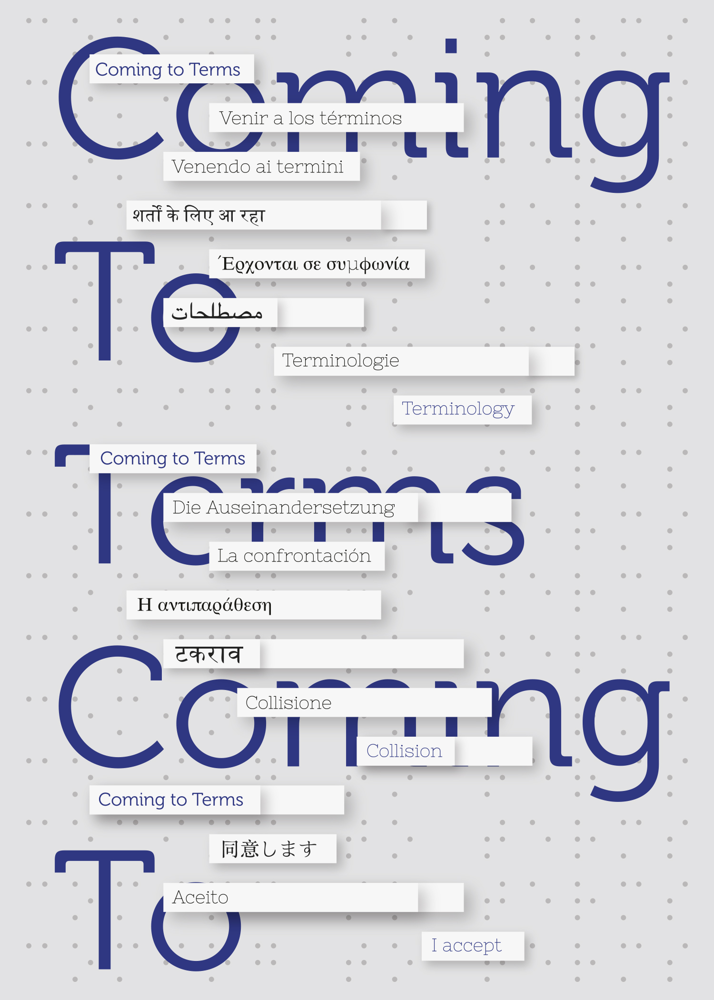

COMING TO TERMS: GALLERY HOURS
October 2015
Saturday, October 24, 2015
- Yvonne Lung
- Kevin McNamee-Tweed
- James Sham
- Karen Elaine Spencer
Coming to Terms is a group exhibition dissecting the limitations of language. The show features work from four artists who mythologize the meaning of words, show gradual adaptations in storytelling, and expose the inevitable misunderstandings that emerge from multiple forms of communication.
The exhibition includes a range of media, such as videos with subtitles and eye-tracking technology, sumi ink drawings, handmade flyers, takeaway postcards, and self-published newspapers. Varied techniques of expression attempt to simulate the different ways information is distributed. Debate, reenactment, interpretation, translation, storytelling, handwriting, letters, advertising, and journalism are considered, corresponding in a frantic, nonverbal call-and-response to uncover the indefinable.
Coming to Terms shows the contradiction of language interpretation; the inadequacies of the rational mind to “come to terms”, and the point at which we leave those terms behind. This empathetic study calls attention to the paradoxes inevitable in language, bringing us closer to the creation of alternative, newer forms of expression.
Curator Maddie Hewitt continues with similar themes and tactics from her last exhibition at Little Berlin, Hard To Please. Her curatorial projects reveal her preoccupation with omnipresent human desires, disposition, and language in order to understand human interaction and its struggles.
RSVP on Facebook
